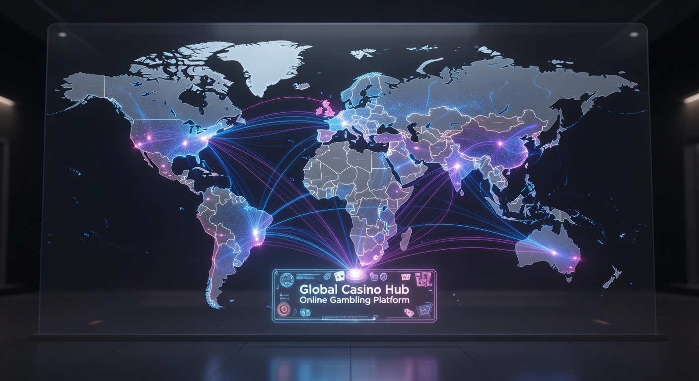
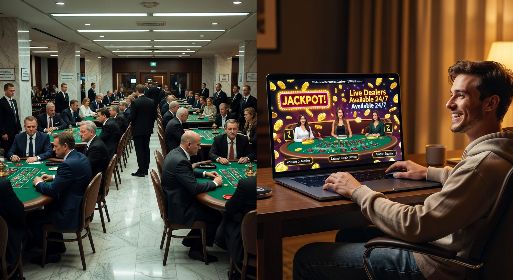
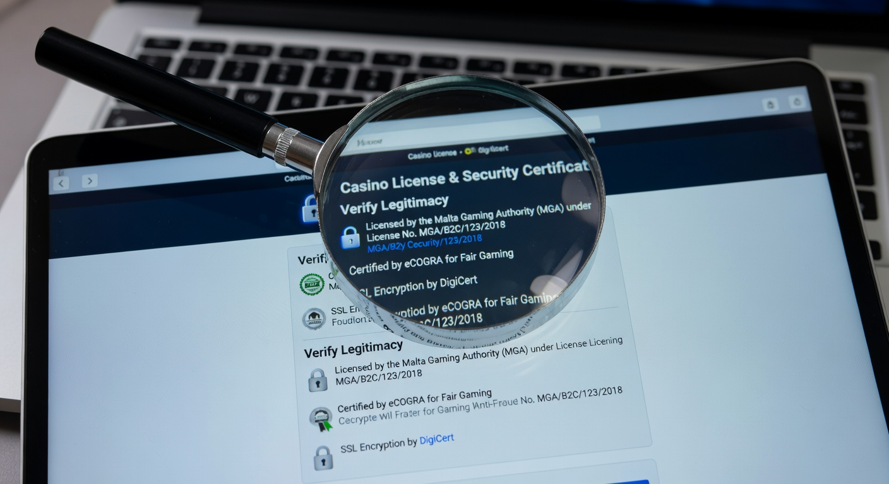
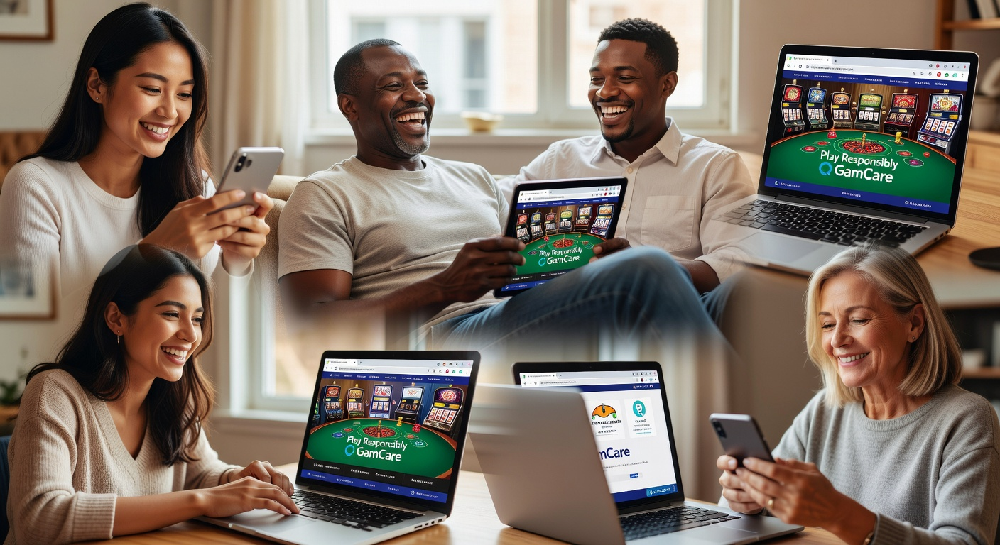

Beste buitenlandse goksites van 2026: De ultieme gids
In het huidige jaar 2026 is de wereld van online kansspelen drastisch veranderd. Terwijl de Nederlandse markt volledig gereguleerd is, zoeken steeds meer ervaren gokkers naar de beste buitenlandse goksites om te ontsnappen aan de strikte limieten en de beperkte keuze bij lokale aanbieders. Of het nu gaat om hogere bonussen, een breder spelaanbod of de afwezigheid van bepaalde registratiesystemen, de internationale markt biedt anno 2026 ongekende mogelijkheden.
Goldbet Casino
★★★★★ 5.0Welkomstbonus tot €500
Newlucky Casino
★★★★★ 4.8100% bonus op eerste storting
Dragobet Casino
★★★★★ 4.7Exclusieve bonus tot €1000
Fortunicabet Casino
★★★★★ 4.5200% bonus + 50 gratis spins
Spinorhino Casino
★★★★★ 4.4Welkomstbonus 150% tot €300
Lizaro Casino
★★★★★ 4.3100% tot €500 + 100 free spins
Het vinden van een betrouwbaar platform over de grens vereist echter kennis van zaken. Niet elke aanbieder is even veilig en de wetgeving verschilt per jurisdictie. In deze uitgebreide gids onderzoeken we de beste buitenlandse goksites, analyseren we de voor- en nadelen en leggen we uit waar je op moet letten om een veilige spelervaring te garanderen. We duiken diep in de licenties van Malta, Curaçao en andere regio's die in 2026 de standaard zetten voor wereldwijd entertainment.
De populariteit van deze platforms is niet zonder reden gegroeid. Veel spelers voelen zich beperkt door de Nederlandse regels en zoeken de vrijheid die internationale operators bieden. Door gebruik te maken van geavanceerde technologieën en innovatieve betaalmethoden, zijn de beste buitenlandse goksites in 2026 toegankelijker en veiliger dan ooit tevoren. In dit artikel nemen we je mee langs alle facetten van het internationale goklandschap.
Top 10 beste buitenlandse goksites voor Nederlandse spelers
Wanneer we kijken naar de huidige markt, zien we dat een aantal namen er met kop en schouders bovenuit steken. Deze beste buitenlandse goksites zijn geselecteerd op basis van hun reputatie, uitbetalingssnelheid en de kwaliteit van hun spellen. Hieronder presenteren we de top 10 die in 2026 de harten van vele gokkers heeft gestolen.
| Casino Naam | Licentie | Bonus (2026) | Kenmerk |
|---|---|---|---|
| TonyBet | Estonia/UK | 100% tot €500 | Uitstekend sportsbook |
| SpinTexas | Curaçao | 200% tot €1000 | Crypto-vriendelijk |
| Wintari | MGA | Cashback 15% | Snelste uitbetalingen |
| WestAce | Kahnawake | €1500 Welkomstpakket | Groot aanbod slots |
| Instasino | Isle of Man | 500 Gratis Spins | No-registration optie |
| Unibet International | Gibraltar | Verschilt per regio | Betrouwbare klassieker |
| FortunePanda | Curaçao | Wager-free bonussen | Geen rondspeelvoorwaarden |
| LottoLand Casino | Gibraltar | €200 Bonus | Loterij specialisaties |
| MegaDice | Anjouan | 200% Crypto Bonus | Telegram gokken |
| PalmSlots | Curaçao | €1000 + 100 Spins | 24/7 Live support |
Deze lijst van de beste buitenlandse goksites is samengesteld na uitvoerige tests. Een platform zoals TonyBet is al jaren een vaste waarde voor wie van sportweddenschappen houdt, terwijl nieuwkomers zoals SpinTexas en Wintari in 2026 de markt opschudden met innovatieve loyaliteitsprogramma's. Het is essentieel om te controleren of deze sites hun diensten nog steeds aanbieden aan jouw specifieke regio, aangezien regelgeving in 2026 snel kan veranderen.
Wat deze aanbieders verbindt, is hun focus op de gebruiker. In tegenstelling tot sommige lokale platforms, bieden de beste buitenlandse goksites vaak een meer gepersonaliseerde ervaring. Met WestAce en Instasino zie je bijvoorbeeld dat de interface volledig is geoptimaliseerd voor mobiel gebruik, wat in 2026 de standaard is geworden voor elke serieuze speler.
Criteria voor onze selectie van internationale casino's
Bij het bepalen wat de beste buitenlandse goksites zijn, hanteren we strikte criteria. Betrouwbaarheid staat op nummer één. We kijken niet alleen naar de licentie, maar ook naar de historie van de eigenaar en de ervaringen van andere spelers. Een casino kan nog zo'n hoge bonus hebben, als de uitbetalingen traag verlopen, zal het nooit in onze topsectie verschijnen.
Een ander cruciaal aspect is de software. De beste buitenlandse goksites werken samen met topontwikkelaars zoals NetEnt, Evolution Gaming en Pragmatic Play. Dit garandeert niet alleen een leuke ervaring, maar ook eerlijke resultaten dankzij gecertificeerde Random Number Generators (RNG). Ook de aanwezigheid van een live casino sectie met professionele dealers is in 2026 een absolute must.
Tot slot evalueren we de klantenservice. Internationale platforms moeten 24/7 bereikbaar zijn via live chat. De beste buitenlandse goksites begrijpen dat hun publiek zich in verschillende tijdzones bevindt en bieden daarom ondersteuning in meerdere talen, waaronder vaak Engels en soms zelfs Duits of Frans om een breed publiek te bedienen.
Wat is een online casino buitenland?

Een online casino buitenland is in feite elke goksite die niet beschikt over een Nederlandse vergunning van de Kansspelautoriteit (Ksa), maar wel over een legitieme licentie uit een ander land. Deze aanbieders opereren vanuit jurisdicties zoals Malta, Curaçao, of Gibraltar. Voor veel gokkers vallen deze onder de categorie van de beste buitenlandse goksites omdat ze vaak soepeler regels hanteren voor spelers.
In 2026 is het onderscheid tussen binnenlandse en buitenlandse aanbieders scherper dan ooit. Waar Nederlandse sites gebonden zijn aan strikte stortingslimieten en verplichte registraties in het CRUKS-register, bieden de beste buitenlandse goksites meer autonomie. Dit betekent niet dat het "wilde westen" is; gerenommeerde internationale sites volgen nog steeds strenge Europese of internationale richtlijnen op het gebied van anti-witwassen en spelersbescherming.
Het is belangrijk om te begrijpen dat gokken bij de beste buitenlandse goksites een eigen verantwoordelijkheid met zich meebrengt. Omdat de Nederlandse overheid geen direct toezicht houdt op deze partijen, ben je als speler afhankelijk van de autoriteiten in het land van vestiging. Daarom besteden we in deze gids zoveel aandacht aan het verifiëren van licenties en reputaties van deze mondiale operatoren.
Waarom kiezen voor gokken buiten de Nederlandse grens?

De redenen waarom spelers de voorkeur geven aan de beste buitenlandse goksites zijn divers. Sinds de invoering van strengere wetgeving in Nederland in 2024 en 2025, is de druk op spelers om hun gedrag te laten monitoren toegenomen. In 2026 zien we dat een grote groep spelers die recreatief wil gokken zonder voortdurende bemoeienis, de overstap maakt naar het buitenland.
Naast privacy spelen ook economische motieven een rol. De beste buitenlandse goksites hebben vaak lagere overheadkosten of gunstigere belastingstelsels in hun thuisland, waardoor ze guller kunnen zijn met hun aanbiedingen. Dit vertaalt zich direct naar de speler in de vorm van hogere uitbetalingspercentages en vaker terugkerende promoties die je bij lokale aanbieders zelden tegenkomt.
Bovendien is de technologische innovatie bij de beste buitenlandse goksites vaak een stap verder. Of het nu gaat om de integratie van virtual reality games of de mogelijkheid om met diverse cryptovaluta te betalen, internationale sites lopen vaak voorop. Voor de moderne speler die op zoek is naar de nieuwste trends, is de internationale markt de plek waar het gebeurt in 2026.
Hogere bonussen en promoties
Een van de meest aantrekkelijke aspecten van de beste buitenlandse goksites zijn de bonussen. In Nederland zijn promoties vaak aan banden gelegd door de Ksa om kwetsbare groepen te beschermen. Bij internationale aanbieders kun je echter nog steeds profiteren van welkomstbonussen die oplopen tot duizenden euro's. Of het nu een stortingsbonus is of een pakket aan gratis spins, de extra waarde is aanzienlijk groter.
Daarnaast bieden de beste buitenlandse goksites vaak een uitgebreid loyaliteitsprogramma. Spelers die regelmatig terugkeren worden beloond met VIP-punten, persoonlijke accountmanagers en exclusieve uitnodigingen voor evenementen. Dit soort extraatjes zijn bij de gereguleerde Nederlandse markt vaak verdwenen, wat de beste buitenlandse goksites een streepje voor geeft bij de high-rollers en serieuze hobbyisten.
Ook de rondspeelvoorwaarden zijn bij de beste buitenlandse goksites soms gunstiger. Hoewel je altijd de kleine lettertjes moet lezen, zijn er aanbieders zoals FortunePanda die "wager-free" bonussen aanbieden. Dit betekent dat winst uit bonussen direct opneembaar is, een concept dat in de strikt gereguleerde markten bijna onmogelijk te vinden is in 2026.
Geen CRUKS beperkingen
CRUKS is het Centraal Register Uitsluiting Kansspelen in Nederland. Hoewel dit systeem bedoeld is om gokverslaving tegen te gaan, ervaren sommige spelers het als een inbreuk op hun vrijheid of zijn ze per ongeluk geregistreerd. De beste buitenlandse goksites zijn niet aangesloten op dit register. Dit betekent dat spelers die in Nederland een "speelpauze" hebben, nog steeds terecht kunnen bij internationale aanbieders.
Het is cruciaal om te benadrukken dat gokken zonder CRUKS een verhoogd risico met zich meebrengt als je een geschiedenis van onverantwoord speelgedrag hebt. Echter, voor de speler die bewuste keuzes maakt, bieden de beste buitenlandse goksites een omgeving waar ze zelf de controle behouden over hun uitsluitingen en limieten. De meeste betrouwbare buitenlandse sites hebben hun eigen systemen voor zelfuitsluiting die even effectief kunnen zijn.
In 2026 is de roep om privacy groter dan ooit. Spelers willen niet altijd dat hun gokactiviteiten centraal geregistreerd staan bij een overheidsinstantie. Door te kiezen voor de beste buitenlandse goksites, behoudt men een zekere mate van anonimiteit die binnen de landsgrenzen simpelweg niet meer mogelijk is door de koppeling met iDIN en DigiD.
Groter aanbod aan spellen en providers
De variëteit aan spellen bij de beste buitenlandse goksites is vaak overweldigend. Waar Nederlandse sites soms beperkt zijn tot een select aantal goedgekeurde providers, vind je op internationale platforms duizenden verschillende slots, tafelspellen en niche-games. Providers die in Nederland misschien geen licentie hebben aangevraagd, zijn bij de beste buitenlandse goksites gewoon beschikbaar.
Dit betekent toegang tot unieke spelmechanismen, innovatieve bonusfeatures en thema's die je elders niet ziet. Voor de liefhebber van het live casino bieden de beste buitenlandse goksites vaak tafels uit casino's over de hele wereld, van Las Vegas tot Macau. De interactie met internationale dealers en spelers geeft een extra dimensie aan de spelervaring die lokale sites vaak missen.
Bovendien worden nieuwe spellen vaak als eerste uitgebracht op de grote internationale netwerken. Als speler bij de beste buitenlandse goksites zit je dus op de eerste rang wanneer een nieuwe blockbuster slot wordt gelanceerd. Het ontdekken van minder bekende, maar kwalitatief hoogwaardige studio's is een van de charmes van het gokken over de grens in 2026.
Betrouwbaarheid van buitenlandse goksites controleren

Veiligheid is het allerbelangrijkste wanneer je besluit te spelen bij de beste buitenlandse goksites. Hoe weet je of een site eerlijk is? De eerste stap is altijd het controleren van de licentie-informatie onderaan de homepage. Een betrouwbare operator zal transparant zijn over waar ze gevestigd zijn en welk registratienummer ze hebben. In 2026 zijn er verschillende autoriteiten die als gouden standaard worden beschouwd.
Naast de licentie is het raadzaam om onafhankelijke reviews te lezen. De beste buitenlandse goksites hebben over het algemeen een positieve reputatie op grote fora en vergelijkingssites. Let vooral op klachten over uitbetalingen; als een site structureel winsten inhoudt zonder goede reden, moet je daar ver vandaan blijven. Gelukkig worden dergelijke "rogue" casino's in 2026 snel ontmaskerd door de actieve online gemeenschap.
Een ander teken van betrouwbaarheid is de samenwerking met bekende betaalproviders en softwareleveranciers. Bedrijven als Visa, Mastercard, en grote e-wallets doen geen zaken met louche platforms. Als een site alleen vage betaalmethoden aanbiedt, is dat een rode vlag. De beste buitenlandse goksites investeren fors in hun infrastructuur om een veilige omgeving voor hun klanten te creëren.
Malta Gaming Authority (MGA)
De MGA staat bekend als een van de strengste en meest gerespecteerde toezichthouders in de EU. Veel van de beste buitenlandse goksites opereren onder een MGA-licentie. Deze autoriteit stelt hoge eisen aan spelersbescherming, de scheiding van spelersgelden en de eerlijkheid van de aangeboden spellen. Als je een logo van de MGA ziet, kun je er meestal vanuit gaan dat je bij een van de beste buitenlandse goksites bent beland.
In 2026 blijft Malta een centrale hub voor iGaming in Europa. De voordelen voor spelers zijn groot, omdat de MGA ook een bemiddelende rol kan spelen bij geschillen tussen de speler en de aanbieder. Dit biedt een extra vangnet dat bij veel andere buitenlandse licenties ontbreekt. De beste buitenlandse goksites met een Maltese licentie zijn daarom erg populair onder Europeanen die zekerheid zoeken.
Bovendien moeten MGA-gecertificeerde casino's regelmatig audits ondergaan door onafhankelijke instanties. Dit zorgt ervoor dat het RTP (Return to Player) percentage dat ze communiceren ook daadwerkelijk klopt. Transparantie is het sleutelwoord bij de beste buitenlandse goksites onder deze jurisdictie, wat bijdraagt aan een eerlijk speelveld voor iedereen.
Curaçao eGaming licentie
Curaçao is een van de oudste verstrekkers van online goklicenties ter wereld. Hoewel de reputatie in het verleden wisselend was, heeft een grote hervorming in 2024 en 2025 de standaarden aanzienlijk verhoogd. Tegenwoordig behoren veel van de beste buitenlandse goksites die crypto-betalingen accepteren tot de Curaçaose jurisdictie. Het biedt aanbieders meer flexibiliteit, wat vaak resulteert in hogere bonussen voor de spelers.
Voor de speler betekent een licentie uit Curaçao vaak dat er minder bureaucratie is. De verificatieprocessen (KYC) zijn nog steeds aanwezig maar vaak sneller dan bij Europese tegenhangers. De beste buitenlandse goksites uit deze regio zijn pioniers op het gebied van nieuwe technologieën. Denk hierbij aan "Provably Fair" games die gebruik maken van blockchain technologie om eerlijkheid te garanderen.
Het is wel belangrijk om specifiek te kijken naar welke masterlicentiehouder de site valt. Er zijn kleine verschillen in de mate van toezicht, maar over het algemeen bieden de beste buitenlandse goksites uit Curaçao in 2026 een veilige en dynamische omgeving. Ze zijn vaak de eerste keuze voor spelers die willen gokken met Bitcoin, Ethereum of andere digitale valuta.
Kahnawake en andere internationale vergunningen
Naast Malta en Curaçao zijn er andere regio's die kwalitatieve licenties uitgeven. De Kahnawake Gaming Commission uit Canada is een gerespecteerde naam die al sinds de jaren '90 actief is. Veel van de beste buitenlandse goksites die zich richten op de Noord-Amerikaanse en Europese markt kiezen voor deze betrouwbare partner. Ze hebben strikte regels tegen fraude en zorgen voor een eerlijke afhandeling van klachten.
Andere locaties zoals de Isle of Man, Gibraltar, en zelfs Costa Rica (hoewel deze laatste vaker als puur zakelijke registratie wordt gebruikt) spelen een rol in het landschap van 2026. Bij de beste buitenlandse goksites uit deze regio's zie je vaak een sterke focus op innovatie en een internationaal publiek. Het is de diversiteit van deze jurisdicties die de markt voor gokkers zo rijk en gevarieerd maakt.
Wanneer je een site tegenkomt met een licentie uit een minder bekende regio, is het extra belangrijk om de beste buitenlandse goksites te vergelijken op basis van gebruikerservaringen. In 2026 is informatie overal beschikbaar, en een snelle zoekopdracht kan je veel vertellen over de betrouwbaarheid van een specifieke vergunningverlener in combinatie met de betreffende operator.
Hoe herken je de legale online casino’s?

Het onderscheid tussen een legaal Nederlands casino en een legaal buitenlands casino is essentieel om te begrijpen. Legale Nederlandse aanbieders zoals Kansino, Fair Play Casino, en Jack’s Casino Online zijn direct herkenbaar aan het keurmerk "Kansspelautoriteit Vergunninghouder". Deze sites maken gebruik van iDIN en DigiD voor een waterdichte identificatie van de speler.
De beste buitenlandse goksites zijn echter ook "legaal", maar dan binnen hun eigen rechtsgebied. Ze overtreden geen internationale wetten door hun diensten wereldwijd aan te bieden, zolang ze zich houden aan de regels van hun licentiegever. Je herkent deze kwalitatieve sites aan hun professionele uitstraling, uitgebreide algemene voorwaarden en een duidelijk beleid rondom verantwoord spelen, ook al zijn ze niet gebonden aan de Nederlandse Ksa.
Om te voorkomen dat je op een illegale "scam" site terechtkomt, moet je letten op SSL-encryptie (het slotje in de adresbalk) en de aanwezigheid van bekende softwareleveranciers. De beste buitenlandse goksites investeren in hun merk en zullen nooit hun reputatie op het spel zetten door winsten niet uit te keren. Ze opereren als grote internationale bedrijven met duizenden werknemers en miljoenen omzet.
Beste casino’s zonder CRUKS 2026
In 2026 is de zoektocht naar een kwalitatief casino zonder CRUKS een van de meest voorkomende trends onder ervaren spelers. De behoefte aan vrijheid en het vermijden van de soms verstikkende Nederlandse regels leidt velen naar de beste buitenlandse goksites. Deze platforms bieden een alternatief voor spelers die hun eigen grenzen kennen en geen behoefte hebben aan overheidsingrijpen in hun vrije tijd.
Onder de favorieten van dit jaar vallen namen zoals TonyBet, dat al jarenlang stabiliteit biedt, en SpinTexas, dat bekend staat om zijn razendsnelle verwerking van winsten. Ook Instasino heeft in 2026 veel terrein gewonnen door een proces aan te bieden waarbij je direct kunt storten en spelen zonder eerst een ellenlang registratieformulier in te vullen. Dit zijn de beste buitenlandse goksites voor wie houdt van efficiëntie.
Andere sterke kandidaten in deze categorie zijn:
- Wintari: Bekend om zijn royale cashback-regelingen zonder poespas.
- WestAce: Een paradijs voor slot-liefhebbers met wekelijkse toernooien.
- MegaDice: De leider in de nieuwe generatie van crypto-gokken.
Deze selectie van de beste buitenlandse goksites laat zien dat er buiten de Nederlandse grenzen een wereld aan mogelijkheden openligt voor de bewuste speler. Voor meer informatie over dit specifieke segment kun je terecht bij europese goksites, waar de focus ligt op aanbieders binnen ons eigen continent.
Betaalmethoden bij een internationaal online casino
Een van de grootste zorgen voor spelers bij de beste buitenlandse goksites is hoe ze geld kunnen storten en opnemen. Gelukkig is de technologie in 2026 zo ver gevorderd dat internationale betalingen bijna onmiddellijk en uiterst veilig zijn. Waar we vroeger afhankelijk waren van trage bankoverschrijvingen, bieden de beste buitenlandse goksites nu een breed scala aan moderne oplossingen.
Veiligheid staat bij deze transacties centraal. De beste buitenlandse goksites maken gebruik van dezelfde encryptietechnologieën als grote banken om je financiële gegevens te beschermen. Bovendien zijn veel betaalmethoden in 2026 geoptimaliseerd voor mobiel gebruik, waardoor je met één druk op de knop of via gezichtsherkenning een storting kunt doen. Dit gemak is een van de redenen waarom deze platforms zo populair blijven.
Het is ook interessant om te zien dat veel van de beste buitenlandse goksites geen extra kosten in rekening brengen voor transacties. Dit in tegenstelling tot sommige lokale aanbieders die administratiekosten kunnen rekenen voor bepaalde methoden. Transparantie over limieten en verwerkingstijden is een kenmerk van de top-tier internationale operatoren in 2026.
Storten met iDEAL en alternatieven zoals Volt
Hoewel iDEAL specifiek Nederlands is, bieden steeds meer van de beste buitenlandse goksites deze methode aan via tussenpersonen of alternatieven die op precies dezelfde manier werken. Volt is hier een goed voorbeeld van. Het maakt gebruik van "Open Banking" technologie, waardoor je direct vanaf je eigen bankrekening kunt storten bij de beste buitenlandse goksites, zonder dat je een creditcard nodig hebt.
Het voordeel van Volt en vergelijkbare systemen is dat de betaling direct verwerkt wordt. Je hoeft niet te wachten; het geld staat binnen enkele seconden op je spelersaccount. Voor veel Nederlandse spelers voelt dit vertrouwd aan. De beste buitenlandse goksites die deze opties integreren, laten zien dat ze de Nederlandse markt begrijpen en waarderen, ondanks dat ze geen lokale licentie hebben.
Bovendien is de veiligheid van deze systemen in 2026 ongeëvenaard. Je hoeft je bankgegevens niet direct met de beste buitenlandse goksites te delen; de transactie vindt plaats in de beveiligde omgeving van je eigen bank-app. Dit minimaliseert het risico op fraude en maakt drempelvrij gokken mogelijk voor iedereen met een Nederlandse bankrekening.
Cryptovaluta en E-wallets
In 2026 zijn cryptovaluta niet meer weg te denken bij de beste buitenlandse goksites. Bitcoin, Ethereum en stablecoins zoals USDT worden op grote schaal geaccepteerd. De voordelen zijn duidelijk: volledige anonimiteit, lage transactiekosten en ongekende snelheid. Bij de beste buitenlandse goksites die gespecialiseerd zijn in crypto, zoals MegaDice of SpinTexas, worden winsten vaak binnen enkele minuten uitgekeerd naar je wallet.
E-wallets zoals Skrill, Neteller en MiFinity blijven ook een populaire keuze. Ze fungeren als een buffer tussen je bankrekening en de goksite. De beste buitenlandse goksites moedigen het gebruik van deze wallets vaak aan omdat de transacties voor hen ook efficiënter zijn. Bovendien kun je met een e-wallet vaak eenvoudiger je gokbudget beheren door een vast bedrag op de wallet te storten.
Voor spelers die gesteld zijn op hun privacy, zijn crypto en e-wallets de ideale oplossing. De beste buitenlandse goksites die deze methoden aanbieden, trekken een modern publiek aan dat waarde hecht aan technologische vrijheid. In 2026 zien we dat de adoptie van deze betaalmiddelen alleen maar toeneemt, waardoor de kloof met de traditionele bankwereld kleiner wordt.
Betalen Bij een Casino Zonder Cruks
Wanneer je speelt bij een platform dat niet is aangesloten op het CRUKS-systeem, heb je vaak meer flexibiliteit in je betaalkeuzes. De beste buitenlandse goksites zonder CRUKS leggen je geen limieten op die door de Nederlandse staat zijn bepaald. Dit betekent dat je zelf verantwoordelijk bent voor het instellen van je stortingslimieten, wat voor de gedisciplineerde speler een groot voordeel is.
Het betalingsproces bij deze aanbieders is doorgaans erg gestroomlijnd. Omdat ze niet gebonden zijn aan de complexe iDIN-verificatie bij elke storting, kun je bij de beste buitenlandse goksites veel sneller aan de slag. Vaak is een eenmalige KYC (Know Your Customer) check voldoende om voor langere tijd ongestoord te kunnen spelen en uitbetalen.
Veel spelers raadplegen de legale online casino lijst voor ze overstappen naar het buitenland, om de verschillen in betaalgemak goed in kaart te brengen. De beste buitenlandse goksites blinken uit in het aanbieden van lokale betaalmethoden voor een wereldwijd publiek, waardoor je je nooit beperkt voelt in hoe je je geld beheert.
Mobiel gokken zonder Cruks
De smartphone is in 2026 het primaire apparaat geworden voor online entertainment. De beste buitenlandse goksites hebben hierop ingespeeld door hun platforms volledig te optimaliseren voor mobiel gebruik. Of je nu een iPhone of een Android-toestel hebt, de ervaring is vloeiend, snel en intuïtief. Het spelen van je favoriete slots of het plaatsen van een weddenschap kan nu overal en altijd.
Veel van de beste buitenlandse goksites bieden zelfs speciale apps aan die je direct kunt downloaden. Deze apps zijn vaak sneller dan de mobiele website en bieden extra functies zoals push-notificaties voor exclusieve bonussen. Het ontbreken van de CRUKS-koppeling op deze mobiele platforms zorgt voor een ononderbroken speelsessie zonder plotselinge pop-ups of verplichte pauzes die de flow kunnen verstoren.
Daarnaast is de kwaliteit van mobiele live casino spellen bij de beste buitenlandse goksites in 2026 indrukwekkend. Dankzij 5G en geavanceerde streaming-technologieën kun je HD-kwaliteit beelden bekijken zonder vertraging. De beste buitenlandse goksites zorgen ervoor dat je de volledige casino-ervaring in je broekzak hebt, inclusief de mogelijkheid om te chatten met de dealer en andere spelers.
Best Online Casino Europe 2026
Als we kijken naar de Europese markt als geheel, zien we een aantal interessante verschuivingen. De beste buitenlandse goksites in Europa concurreren fel met elkaar, wat gunstig is voor de consument. Landen als Malta, Estland en Gibraltar blijven belangrijke uitvalsbasis voor de grootste operators. Voor Nederlandse gokkers bieden deze europese goksites een gevoel van vertrouwen en nabijheid.
In 2026 zien we ook dat de regelgeving binnen Europa langzaam naar elkaar toe groeit, hoewel elk land zijn eigen nuances behoudt. De beste buitenlandse goksites die in meerdere Europese landen licenties hebben, worden vaak als het meest betrouwbaar beschouwd. Zij moeten immers voldoen aan de strengste gecombineerde eisen van verschillende toezichthouders.
Een platform dat momenteel als een van de "Best Online Casino Europe 2026" wordt bestempeld, is bijvoorbeeld TonyBet. Met hun focus op transparantie, eerlijke bonusvoorwaarden en een gigantisch aanbod, hebben ze een standaard gezet waar veel andere beste buitenlandse goksites alleen maar van kunnen dromen. Het is de Europese kwaliteit die deze sites onderscheidt van de rest van de wereld.
Verschillen tussen KSA-casino's en buitenlandse aanbieders
Om een weloverwogen keuze te maken tussen lokale sites en de beste buitenlandse goksites, is het goed om de belangrijkste verschillen op een rij te zetten. Nederlandse casino's zoals Unibet (NL), Circus Casino, en ComeOn! Casino moeten voldoen aan zeer specifieke regels rondom reclame, bonussen en speellimieten. Dit maakt ze erg veilig, maar soms ook wat rigide.
De beste buitenlandse goksites daarentegen, bieden vaak meer variatie. Denk hierbij aan:
| Kenmerk | Nederlandse KSA Casino's | Beste Buitenlandse Goksites |
|---|---|---|
| Bonussen | Beperkt, vaak maximaal €250 | Zeer hoog, vaak tot €2000+ |
| CRUKS | Verplicht aangesloten | Niet aangesloten |
| Identificatie | iDIN / DigiD verplicht | KYC via documenten / Crypto |
| Spelaanbod | Gekeurd door KSA | Wereldwijd aanbod (NetEnt, etc.) |
| Betaalmethoden | iDEAL, Creditcard | Volt, Crypto, E-wallets, Creditcard |
Buitenlandse partijen zoals Casino 777 (internationale versie) of nieuwe spelers op de markt zoals Wintari en WestAce, richten zich op een internationale ervaring. Waar een site als Kansino zich focust op eenvoud en snelheid voor de Nederlandse markt, proberen de beste buitenlandse goksites een alles-in-één entertainment platform te zijn met alles van poker tot virtual sports.
De keuze hangt uiteindelijk af van wat je als speler belangrijk vindt. Wil je de maximale bescherming van de Nederlandse staat? Kies dan voor een lokale aanbieder. Wil je meer vrijheid, grotere bonussen en een breder scala aan spellen? Dan zijn de beste buitenlandse goksites in 2026 waarschijnlijk een betere match voor jouw speelstijl.
Het belang van een hoog RTP bij internationale aanbieders
Een van de technische aspecten die de beste buitenlandse goksites zo aantrekkelijk maken, is het RTP (Return to Player) percentage. Dit getal geeft aan hoeveel van het ingezette geld gemiddeld wordt teruggegeven aan de spelers over een langere periode. In Nederland zijn de winstmarges voor casino's soms hoger door de zware belastingdruk, wat kan resulteren in lagere RTP's op bepaalde slots.
De beste buitenlandse goksites opereren vaak in landen met een gunstiger belastingklimaat. Hierdoor kunnen ze het zich veroorloven om spellen aan te bieden met een hoger RTP. Dit betekent simpelweg dat je bij de beste buitenlandse goksites op de lange termijn meer waar voor je geld krijgt. Voor de serieuze gokker die kijkt naar statistieken en kansberekening, is dit een doorslaggevend argument.
Bovendien zijn de beste buitenlandse goksites vaak transparanter over deze cijfers. Je kunt bij de meeste moderne slots direct in het informatiemenu zien wat het RTP is. In 2026 zijn er zelfs platforms die live RTP-data tonen, zodat je kunt zien welke spellen op dat moment "heet" zijn. Dit soort innovaties vind je sneller bij de beste buitenlandse goksites dan bij de conservatieve lokale aanbieders.
De rol van klantenservice bij goksites over de grens
Niets is zo vervelend als een probleem hebben en niemand kunnen bereiken. De beste buitenlandse goksites begrijpen dit en hebben zwaar geïnvesteerd in hun supportafdelingen. In 2026 is een 24/7 live chat de absolute standaard. Of je nu een vraag hebt over een bonus of hulp nodig hebt bij een uitbetaling, je wordt bij de beste buitenlandse goksites direct te woord gestaan.
Hoewel de voertaal vaak Engels is, maken de beste buitenlandse goksites steeds vaker gebruik van geavanceerde real-time vertaaltools. Hierdoor kun je in het Nederlands je vraag stellen en krijg je in begrijpelijk Nederlands antwoord, ook al zit de medewerker in Malta of Curaçao. Dit verlaagt de drempel voor spelers die minder comfortabel zijn met de Engelse taal.
Een ander kenmerk van de beste buitenlandse goksites is de aanwezigheid van een uitgebreide FAQ-sectie. Hier vind je antwoorden op de meest voorkomende vragen over accountverificatie, stortingslimieten en spelregels. De professionaliteit van de klantenservice is vaak een goede graadmeter voor de algehele betrouwbaarheid van het casino. De beste buitenlandse goksites zullen je nooit in de kou laten staan.
VIP-programma's en loyaliteitsbeloningen in 2026
In 2026 is loyaliteit geld waard bij de beste buitenlandse goksites. Waar Nederlandse aanbieders vaak beperkt zijn in het belonen van spelers om overmatige deelname niet te stimuleren, gaan internationale sites een stap verder. Het VIP-programma van de beste buitenlandse goksites is ontworpen om je het gevoel te geven dat je een gewaardeerde gast bent.
Dit vertaalt zich in tastbare voordelen zoals:
- Hogere uitbetalingslimieten voor VIP-leden.
- Persoonlijke accountmanagers die altijd voor je klaarstaan.
- Exclusieve bonussen die zijn afgestemd op jouw favoriete spellen.
- Verjaardagscadeaus en uitnodigingen voor fysieke evenementen.
De beste buitenlandse goksites zoals Instasino en WestAce hebben innovatieve "gamification" elementen toegevoegd. Door spellen te spelen, stijg je in niveau en ontgrendel je kisten met beloningen. Dit maakt de ervaring niet alleen lucratiever, maar ook leuker. In de competitieve markt van 2026 moeten de beste buitenlandse goksites alles uit de kast halen om hun spelers te behouden.
Spelaanbod: Van slots tot live dealers
Het hart van elke goksite zijn de spellen. Bij de beste buitenlandse goksites vind je een assortiment dat vaak groter is dan welk fysiek casino dan ook. Met bibliotheken van 5.000 tot soms wel 10.000 verschillende titels raak je nooit uitgespeeld. Van klassieke fruitautomaten tot de nieuwste "Megaways" slots, de beste buitenlandse goksites hebben het allemaal.
Het live casino segment heeft in 2026 een enorme vlucht genomen. Dankzij augmented reality en interactieve features voelt het alsof je echt aan de tafel zit. De beste buitenlandse goksites werken samen met marktleiders als Evolution Gaming om spectaculaire game shows aan te bieden zoals "Crazy Time 2026" of "Lightning Roulette Ultra". Deze ervaringen zijn uniek en vaak niet beschikbaar op kleinere, lokale sites.
Vergeet ook de tafelspellen niet. Bij de beste buitenlandse goksites kun je talloze varianten van Blackjack, Baccarat en Poker vinden. Of je nu een beginner bent die met centen wil spelen of een pro die voor duizenden euro's per hand gaat, er is altijd een tafel die bij je past. De diversiteit in limieten is een groot pluspunt van de beste buitenlandse goksites.
Veiligheid en encryptie op het internet
In het digitale tijdperk van 2026 is cyberveiligheid cruciaal. De beste buitenlandse goksites maken gebruik van de nieuwste TLS 1.3 encryptie om alle dataoverdracht te beveiligen. Dit betekent dat je persoonlijke gegevens en betalingsinformatie onleesbaar zijn voor kwaadwillenden. Veiligheid is bij de beste buitenlandse goksites geen optie, maar een fundament.
Bovendien worden de servers van de beste buitenlandse goksites beschermd door geavanceerde firewalls en constante monitoring. Veel aanbieders laten hun systemen regelmatig testen door externe beveiligingsbedrijven om lekken te voorkomen. Als speler bij de beste buitenlandse goksites kun je er dus op vertrouwen dat je in een veilige digitale omgeving verblijft.
Vergeet ook de factor van eerlijkheid niet. De beste buitenlandse goksites laten hun software controleren door instanties als eCOGRA of iTech Labs. Deze certificaten bewijzen dat de spellen niet gemanipuleerd zijn en dat elke draai aan een slot of elke gedeelde kaart puur op toeval berust. Vertrouwen is het kostbaarste bezit van de beste buitenlandse goksites in 2026.
Stappenplan: Beginnen met spelen bij een buitenlandse goksite
Wil je de sprong wagen naar een van de beste buitenlandse goksites? Volg dan dit eenvoudige stappenplan om veilig en snel aan de slag te gaan. In 2026 is het proces eenvoudiger dan ooit, maar zorgvuldigheid blijft geboden.
- Kies een aanbieder: Selecteer een van de beste buitenlandse goksites uit onze top 10 lijst.
- Controleer de licentie: Scroll naar beneden op de website en verifieer de licentiegegevens.
- Registreer een account: Vul je gegevens in. Bij de beste buitenlandse goksites duurt dit meestal slechts enkele minuten.
- Stel limieten in: Ga direct naar je accountinstellingen en stel stortings- en tijdslimieten in voor jezelf.
- Doe een storting: Kies je favoriete betaalmethode (bijv. Volt of Crypto) en claim je welkomstbonus.
- Begin met spelen: Kies je favoriete spel en geniet van de ervaring bij de beste buitenlandse goksites.
Onthoud dat verificatie (KYC) vaak pas nodig is bij je eerste grote uitbetaling. Het is echter slim om dit proces zo snel mogelijk te doorlopen. De beste buitenlandse goksites waarderen proactieve spelers en dit zorgt ervoor dat je winsten later zonder vertraging worden uitbetaald. Voor onze zuiderburen zijn de beste belgische goksites een prima alternatief als je toch binnen de Benelux wilt blijven.
Verantwoord gokken en zelfuitsluiting
Hoewel de beste buitenlandse goksites niet zijn aangesloten op CRUKS, nemen ze verantwoord gokken zeer serieus. In 2026 hebben de meeste top-aanbieders een uitgebreide sectie met tools om je speelgedrag onder controle te houden. Je kunt hierbij denken aan verlieslimieten, sessietimers en afkoelperiodes.
Als je merkt dat het gokken geen spelletje meer is, bieden de beste buitenlandse goksites de mogelijkheid tot volledige zelfuitsluiting. Dit proces is vaak onomkeerbaar voor de gekozen periode, wat je de nodige bescherming biedt. Bovendien werken de beste buitenlandse goksites vaak samen met internationale hulporganisaties zoals GamCare en BeGambleAware.
Het is belangrijk om te onthouden dat gokken bedoeld is als entertainment. De beste buitenlandse goksites zijn er voor je plezier, niet als een manier om geld te verdienen. Wees altijd eerlijk tegen jezelf over je uitgaven en zoek hulp als je het gevoel hebt dat je de controle verliest. In 2026 is er meer hulp beschikbaar dan ooit, dus aarzel nooit om aan de bel te trekken.
Conclusie: Is een buitenlands casino de juiste keuze?
De wereld van de beste buitenlandse goksites in 2026 biedt een ongekende rijkdom aan spellen, bonussen en technologische innovaties. Voor de Nederlandse speler die op zoek is naar meer vrijheid en variatie, zijn deze platforms een uitstekend alternatief voor de lokale markt. Of je nu kiest voor de stabiliteit van een MGA-casino of de innovatie van een crypto-site uit Curaçao, de mogelijkheden zijn eindeloos.
Toch komt deze vrijheid met een verantwoordelijkheid. Het is aan jou om de beste buitenlandse goksites kritisch te beoordelen en je eigen grenzen te bewaken. Door te kiezen voor gerenommeerde namen en te letten op licenties en reviews, minimaliseer je de risico's en maximaliseer je het plezier. De beste buitenlandse goksites zijn klaar om je in 2026 een onvergetelijke ervaring te bezorgen.
Of je nu gaat voor de gigantische jackpots, het spannende live casino of de royale welkomstbonussen, we hopen dat deze gids je heeft geholpen bij het vinden van de beste buitenlandse goksites. Onthoud: speel met mate, geniet van het spel, en kies altijd voor kwaliteit boven alles. Veel succes aan de (virtuele) tafels!
Veelgestelde vragen over buitenlandse online casino's
Zijn de beste buitenlandse goksites veilig voor Nederlanders?
Ja, mits je kiest voor aanbieders met een erkende licentie zoals die van de MGA of de vernieuwde Curaçao-vergunning. De beste buitenlandse goksites maken gebruik van hoogwaardige beveiliging om spelers uit Nederland een veilige omgeving te bieden.
Kan ik met iDEAL betalen bij buitenlandse casino's?
Veel van de beste buitenlandse goksites bieden iDEAL-alternatieven aan zoals Volt of Trustly, die op exact dezelfde wijze werken via je eigen bank. Hierdoor kun je ook in 2026 eenvoudig en snel storten bij internationale aanbieders.
Wat zijn de voordelen van gokken zonder CRUKS?
Het belangrijkste voordeel van de beste buitenlandse goksites zonder CRUKS is de vrijheid. Je hebt geen last van landelijke speelpauzes of strikte overheidslimieten, waardoor je zelf de volledige controle over je account en speelstijl behoudt.
Moet ik belasting betalen over mijn winst bij buitenlandse goksites?
In 2026 hangt dit af van de vestigingsplaats van het casino. Binnen de EU (zoals Malta) is winst vaak belastingvrij voor de speler, maar bij aanbieders buiten de EU kan dit anders zijn. Raadpleeg altijd de actuele regels van de Belastingdienst voor jouw specifieke situatie.
Wat is het beste buitenlandse casino van 2026?
Hoewel dit persoonlijk is, worden TonyBet en SpinTexas momenteel beschouwd als twee van de beste buitenlandse goksites vanwege hun betrouwbaarheid, spelaanbod en snelle uitbetalingen.

Digitale marketeer en contentspecialist met ruim 7 jaar ervaring.